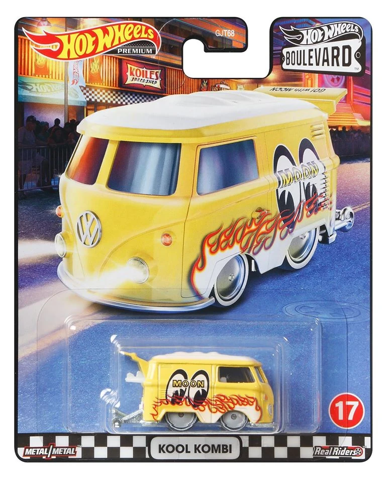

Home
History
Series
Recommendations
Best car so far
Since the release of the Boulevard series, there have been dozens of cars that can be called classics. My personal favorite among them, and the car I think is the best, must be the Volkswagen Moonyes from the 2020 line Series 4.
